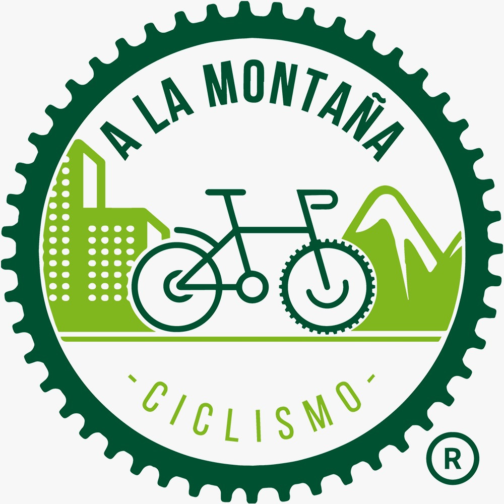

La salud de la bici
24/11/2022
¿Porque es saludable hacer bici?
La bicicleta es una actividad física accesible y de bajo impacto que puede proporcionar una gran cantidad de beneficios para la salud. Ya sea que se utilice como medio de transporte diario o como actividad recreativa, andar en bicicleta puede ayudar a mantener una buena salud cardiovascular, mejorar la fuerza y la resistencia muscular, y reducir el riesgo de enfermedades crónicas. Para empezar, andar en bicicleta es una forma efectiva de mejorar la salud cardiovascular. Andar en bicicleta a un ritmo moderado durante al menos 30 minutos al día puede aumentar la frecuencia cardíaca y mejorar la circulación sanguínea. Esto a su vez ayuda a fortalecer el corazón y los pulmones, reducir la presión arterial y disminuir el riesgo de enfermedades cardíacas. Además, la bicicleta es una actividad de bajo impacto que puede ser más amigable para las articulaciones que otros deportes o actividades físicas. Andar en bicicleta puede mejorar la flexibilidad y la movilidad articular, sin ejercer demasiada presión sobre las rodillas, tobillos y otras articulaciones. Por lo tanto, puede ser una excelente forma de actividad física para personas que tienen problemas de salud o lesiones que les impiden hacer ejercicios de alto impacto. Otro beneficio de la bicicleta es que puede ayudar a mejorar la fuerza y la resistencia muscular. Andar en bicicleta trabaja los músculos de las piernas, los glúteos, los brazos y la espalda, lo que puede ayudar a fortalecer y tonificar el cuerpo. Además, al andar en bicicleta en diferentes terrenos, como subidas o terrenos irregulares, se puede mejorar la resistencia muscular y la coordinación. Además, la bicicleta es una actividad que puede ayudar a reducir el riesgo de enfermedades crónicas. Al andar en bicicleta se queman calorías y se reduce la grasa corporal, lo que puede ayudar a prevenir la obesidad y la diabetes tipo 2. También puede ayudar a reducir el riesgo de enfermedades del corazón, el cáncer y la osteoporosis. En resumen, andar en bicicleta es una actividad física muy beneficiosa para la salud. Puede mejorar la salud cardiovascular, la fuerza y la resistencia muscular, y reducir el riesgo de enfermedades crónicas. Además, la bicicleta es una actividad accesible y de bajo impacto que puede ser disfrutada por personas de todas las edades y niveles de habilidad. Por lo tanto, alentamos a todos a considerar la bicicleta como una forma de actividad física y a aprovechar los beneficios que ofrece para la salud.
.jpeg)

.jpeg)